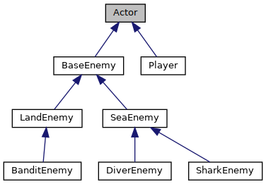

The Entity-Component-System―or ECS―pattern is a software architecture pattern where objects are defined by composition (has-a relationships) as opposed to inheritance (is-a relationships). Quite simply, objects are represented as
Suppose that you're building a game using the ECS pattern. In order to draw objects, you need to know:
We will put these two pieces of information into a DrawComponent and a TransformComponent,
Here is a basic example of how to create an entity with a TransformComponent and DrawComponent in my work-in-progress game engine. Note that the code for the necessary components and systems is not shown here:
Entity entity = EntityManager::CreateEntity();
entity.Add<TransformComponent>()->Init(glm::vec3(0, 0, 0), // position
glm::vec3(3.f, 2.3f, 1)); // scale
DrawComponent *pDraw = entity.Add<DrawComponent>();
pDraw->SetGeometry(ShapeType::PLANE);
pDraw->SetTexture(TEXTURE_PATH + "Background.tga", TextureType::RGB);
Figure 1: Creating an entity with Transform and Draw components
Some developers seem convinced that the standard OOP methodology is The One True Way of Programming™. While there are certainly use-cases where classes and inheritance bring great benefits for the clarity and manageability of code, inheritance can also bring unnecessary complexity without providing many benefits.
Imagine you're building a game where objects are defined in the traditional OOP style, and your enemy/player class hierarchy currently looks like this:
Figure 2: Class hierarchy for enemies and players
At some point in development―perhaps while working on an underwater level―you decide that bandit diver enemies would be a nice addition to your game. Unfortunately, inheriting from both the BanditEnemy and DiverEnemy classes would result in the diamond of death (or perhaps your language of choice doesn't even support multiple inheritance to begin with!).
Okay... maybe it's time to restructure the class hierarchy so that the game can have enemies that can be on both land and sea without needing to deal with multiple inheritance. You quickly notice, however, that much of an enemy's functionality (where and how it can move, how it attacks, etc) depends on whether it is a sea or land enemy. You could resort to duplicating code, but that would defeat the purpose of using inheritance in the first place! Another option is to push all of that functionality into the BaseEnemy class and allow child classes to pick and choose which pieces of functionality to use. But then your BaseEnemy class would actually be a HodgePodgeOfEverythingEnemy class, and as the game becomes larger and more complex, that one class will end up being the source of many bugs and many, many wasted hours.
Now consider the case of using ECS. A SwimmableComponent could be attached to entities that represent sea enemies, while a WalkableComponent could be attached to entities that represent land enemies. In fact, now that the game is using
When objects are defined with classes, the structure of that object is more-or-less fixed at compile-time. With ECS, components can be added and removed from entities at runtime, which allows for greater flexibility in terms of what an object can do.
Along a similar line of thought as the previous point, the definition of objects no longer has to be within the source code, since objects can simply be created at runtime. This brings a number of benefits. Firstly, changing the properties of an object no longer requires a recompliation (one could even have hot-swapping functionality, so that a running executable can load changes without restarting), which can lead to much tighter iteration cycles. Also, making the definition of objects data instead of code allows for non-technical team members to make changes that would otherwise require the modification of code. For example, a game designer who wants a certain enemy to be able to swim can simply add an existing SwimmableComponent to the enemy's entity definition without any changes to the code (of course, if no SwimmableComponent existed, then that would have to be programmed).
When some forethought is put into the design of systems and components (which will be discussed in part 2 of this article series), the development of separate pieces of functionality is generally independent. The merits of decoupling are multitudinous and well-studied, with some key points being a greater clarity of code and improved ease of spliting up work between multiple developers.
Building ECS into a project takes time, especially if performance and/or multithreading is a concern, and it is ultimately something that adds
Predicting the performance effects of one software engineering solution to another is a tricky business indeed, and most performance predictions ought to be subject to the maxim "it's false until it's profiled". That being said, there really are no free lunches. Using ECS will impose some amount of performance and space overhead. One could almost always (embedded programming aside) build an ECS framework to meet their performance and space needs, but―as mentioned in the previous point―doing so is not always worth the effort. When it is worth the effort, however, there are a number of tricks that can eliminate many of the overheads associated with naïve ECS framework implementations. Part 1 of this article series, which discusses implementing ECS frameworks, will touch on various performance details.
Building applications and games using the ECS pattern is not necessarily any more difficult than it would be under different architectures―it can actually be much easier if ECS is right for the project―but it certainly is a different way of developing. There will always be some amount of resistance to ideas that are unfamiliar, and for small projects or projects with tight schedules, the initial decrease in productivity while developers get up to speed might not be worth it.